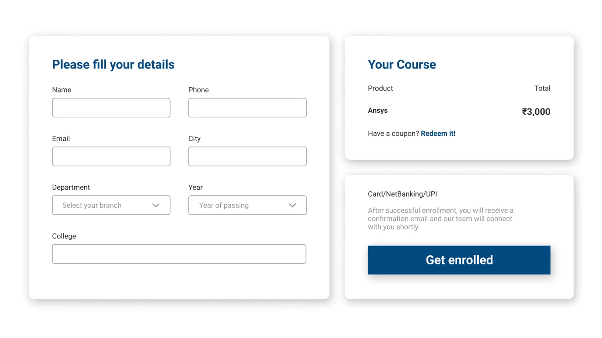
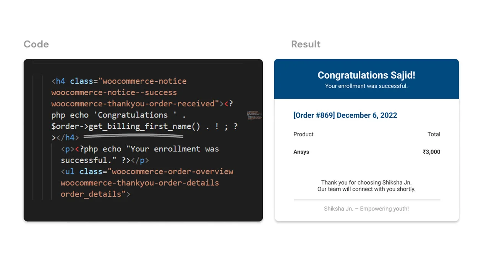
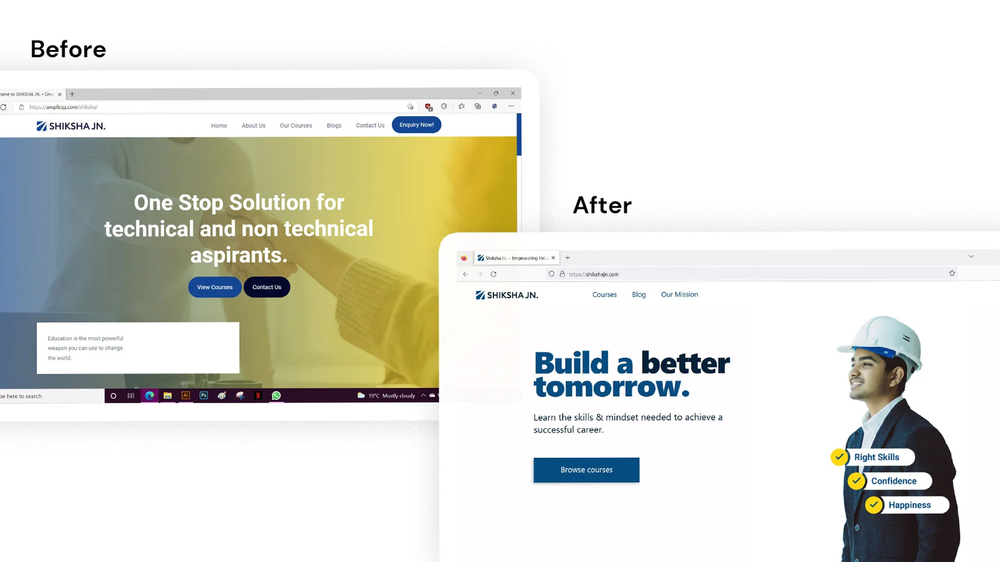

Shiksha Jn.
Role: Brand/Web Designer + Developer
Designed & Developed the website.

Role: Brand/Web Designer + Developer
Designed & Developed the website.
Shiksha means education, learning and teaching in Hindi. And Jn. is
short form for junction. Shiksha Jn. helps Engineering/Pharmacy students
and professionals achieve a comprehensive skill set as per real-time
industry needs and enhance their technical & professional skills.
They offer LIVE sessions taught by industry professionals on various
engineering & pharmacy topics. Users can check out the course details
and enroll directly on the website.

The old website was developed by a freelance developer and lacked design
thinking. Students and Professors were struggling to navigate and find
details about the courses.
Bad design was also hurting the trust of new visitors. They wanted
something more mature. After all these students were not kids and the
courses were also quite advanced.
The founder/client contacted me to discuss these problems. And after few
long zoom meetings, we both came to the conclusion that we absolutely
need to redesign this website. And a brand refresh too, More on that
later.

The Client had a limited budget and changes have to made relatively quickly to keep students and professors trust in the platform. They also needed the functionality to add/edit courses themself, And a lot more features.
So we decided to use WordPress to build this website, for two basic reasons.

I started by learning about the business and the competitive landscape
and why would users will use this platform in the first place. My
previous experience working full time in ed-tech helped a lot. I found
out that e-learning platforms lacked character and emotions. They were
pretty boring and complex.
The client was constantly in touch with users and asking questions on
what they want to see in the new website. In my secondary research I
found that our competitors have most of the important course info behind
a pay wall and pricing was also deceptive.
Here are the few design solutions I derived from my primary and secondary research.
I already had a lot of ideas and biases on what users want from my
previous ed-tech experience. But I wanted to learn what users actually
want.
We found the right user group for interview by answering following
questions
End Users: Engineering Students from 3rd tier colleges and universities. What they want/need: They want to learn realtime skills that will help them land their first job. Why they will choose our platform/courses: We will provide a mature yet friendly platform and faculty they can trust.
We started talking to students from 3rd tier universities who are about
to graduate.
Some of the key questions we asked:

Since the client wanted a functionality to add/edit courses feature, I
created a global template that will stay consistent across all courses
except the dynamic content(chapters, product image, etc.)
I designed these pages to provide all the details upfront in a friendly
way. Below enroll button I included a inquiry link to help users easily
questions before buying the course. All the course/product image were
designed by me. I chose the book style because it looked good and also
differentiated our courses from the competition.


In my research users often sound frustrated by the login prompt while checkout. So I kept the checkout experience clean, simple and easy. No need to sign up or login, just fill your details and checkout.
The payment successful message in Woocommerce(A popular WordPress plugin) doesn’t include user name. It just shows the order details. So I did some research and added php code to include user name with a congratulations message. It added more delight for the user.
The previous design was generic and lacked emotions, I fixed that by bringing in right image, copy & layout.
To build the users trust in the platform we also needed a strong and consistent brand behind the platform. Branding also helped us differentiate from the competition. Furthermore the brand guide I developed for the client also helped me in the design process of the website(Type, colors, design system etc).

Shiksha Jn. is a platform where people come to build a better tomorrow.
To enhance the skill sets & employability of Indian youths.
The logomark gives a feeling of modern, sharp and fast moving
representing the nature of the brand. The mark was made from a perfect
square with three rounded and one sharp corner which gives a feeling of
reliable and sharp at the same time.
A Junction is a place at which two or more rail routes converge or
diverge.

Finding the right colors & fonts included research, brand archetypes, and peers feedback.


I used Fontawesome for icons and designed the illustrations that complement the brand image.
I created a global design system on WordPress, so that the client can easily manage the website. I created a brand guide as well so that the graphic designers and employees can refer to it to develop further brand collaterals.


Students and professors love the new design, the client also gained confidence in promoting the brand, and getting positive feedback all around. But, we are not done yet. Students also use the Shiksha Jn. mobile app to manage recordings and other tasks. I hope I get to work on the App design as well to further enhance the UX.
View LIVE site